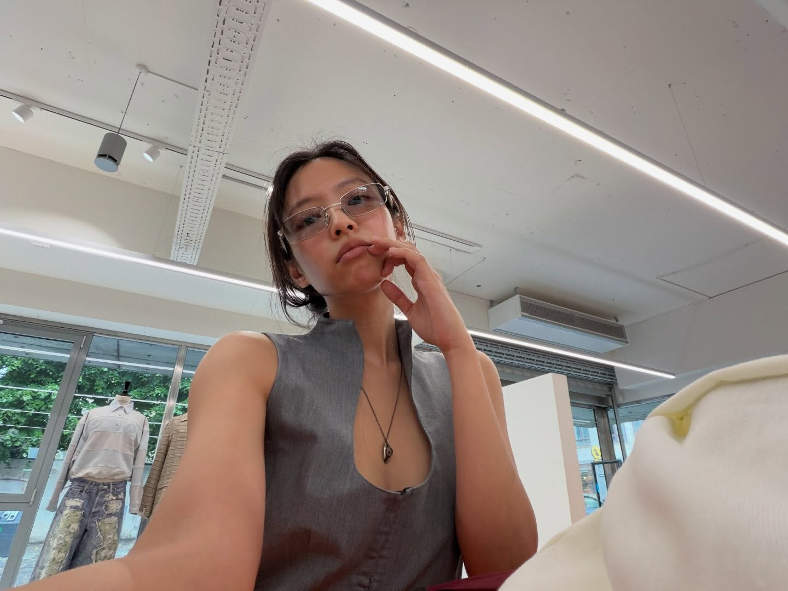
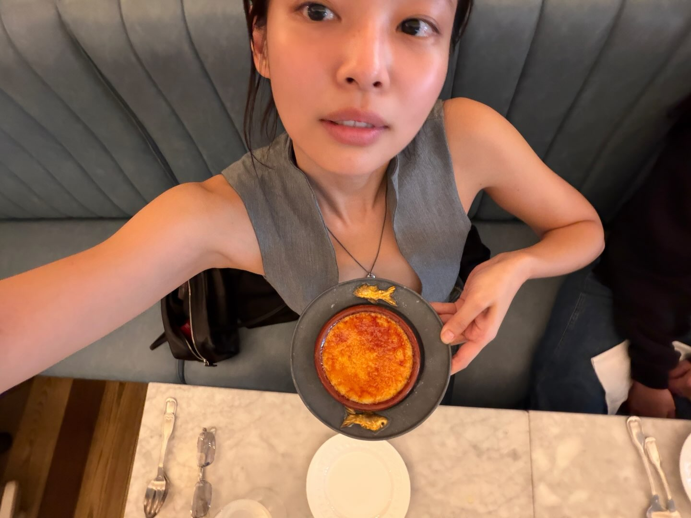
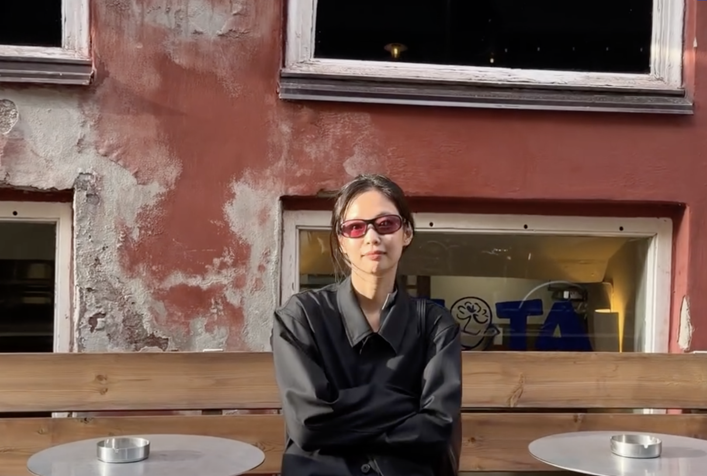
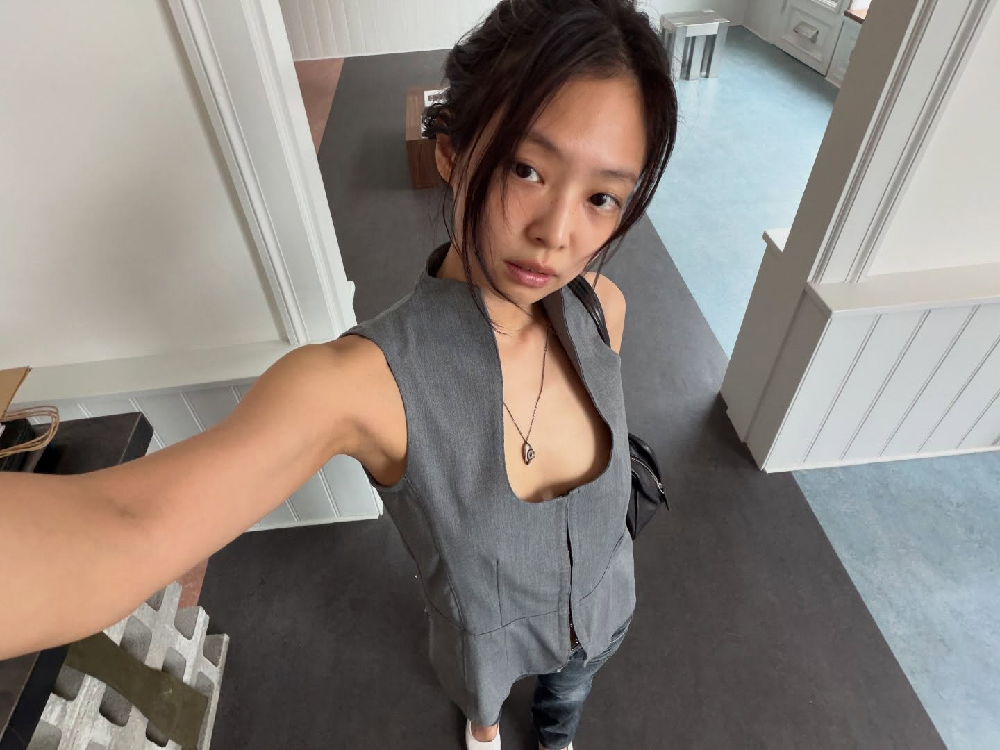
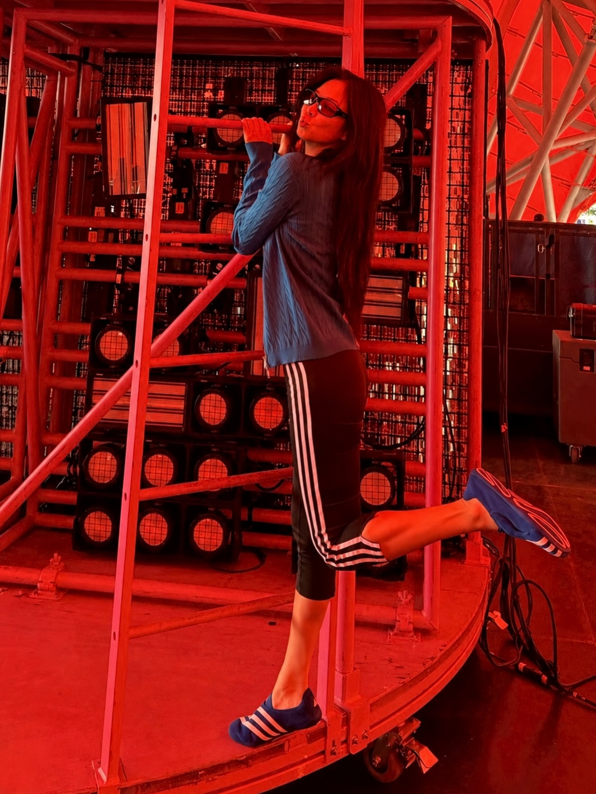
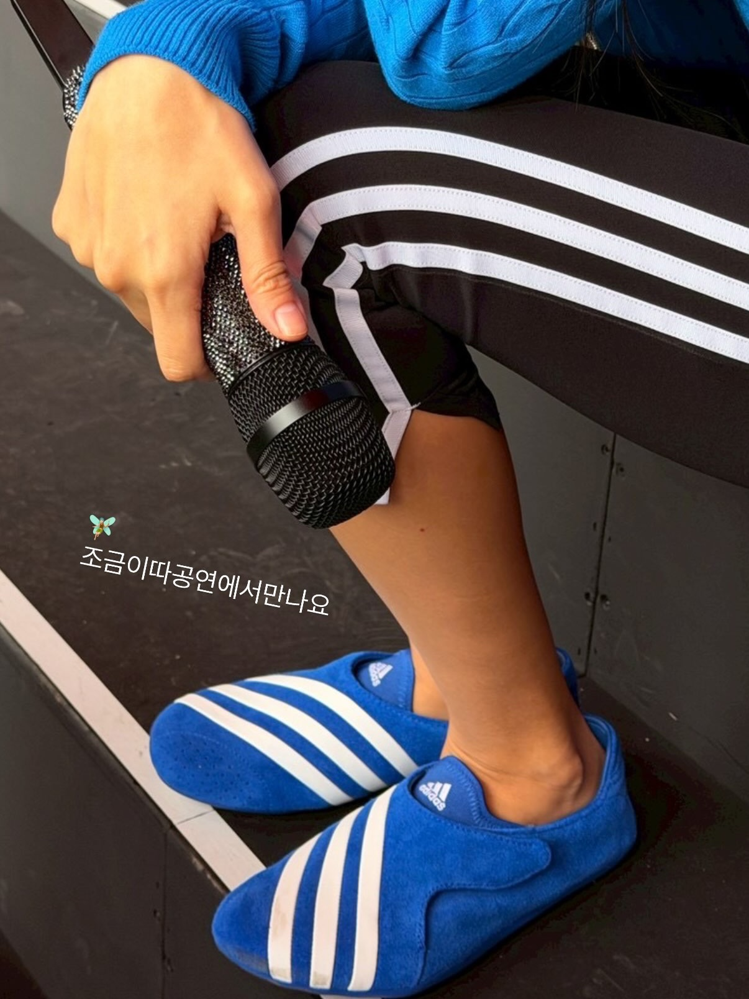
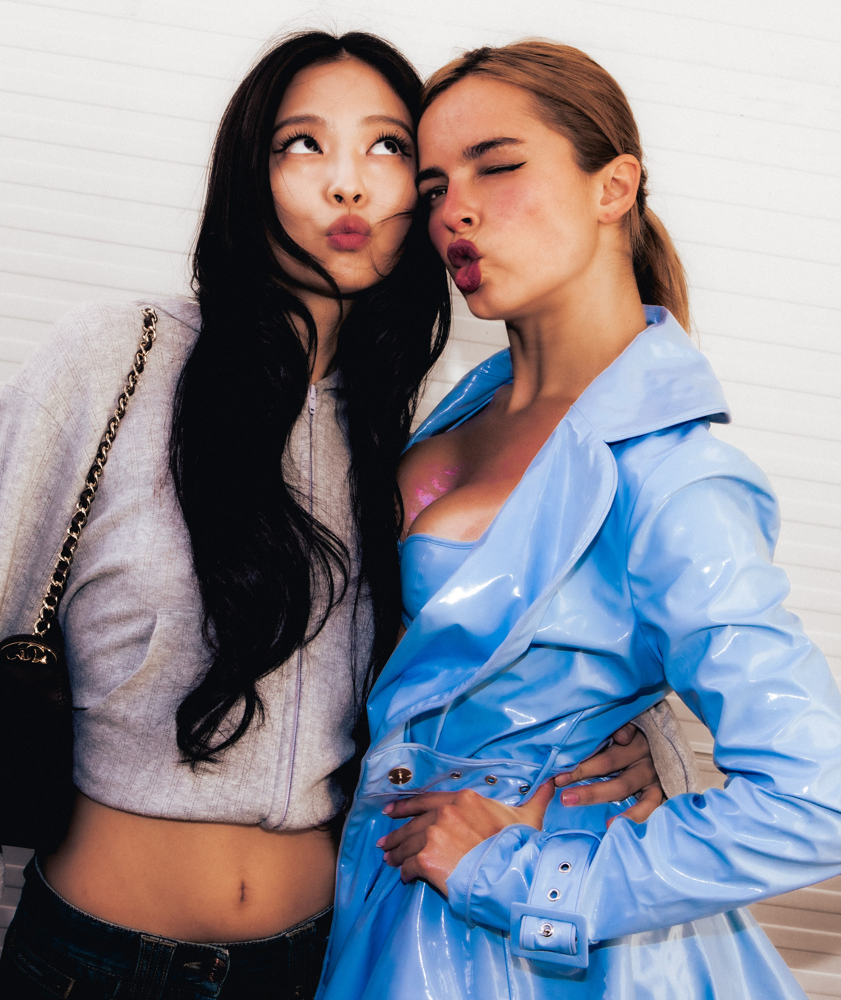
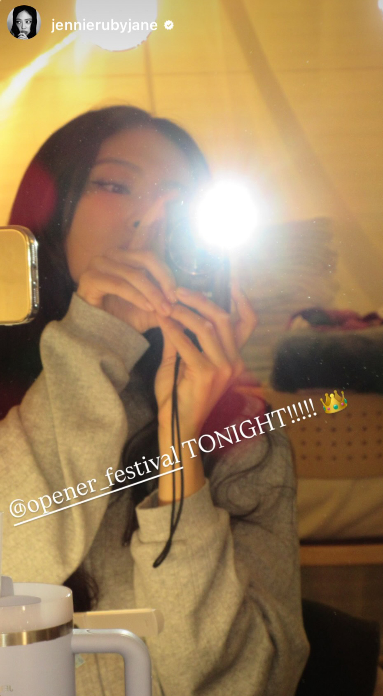
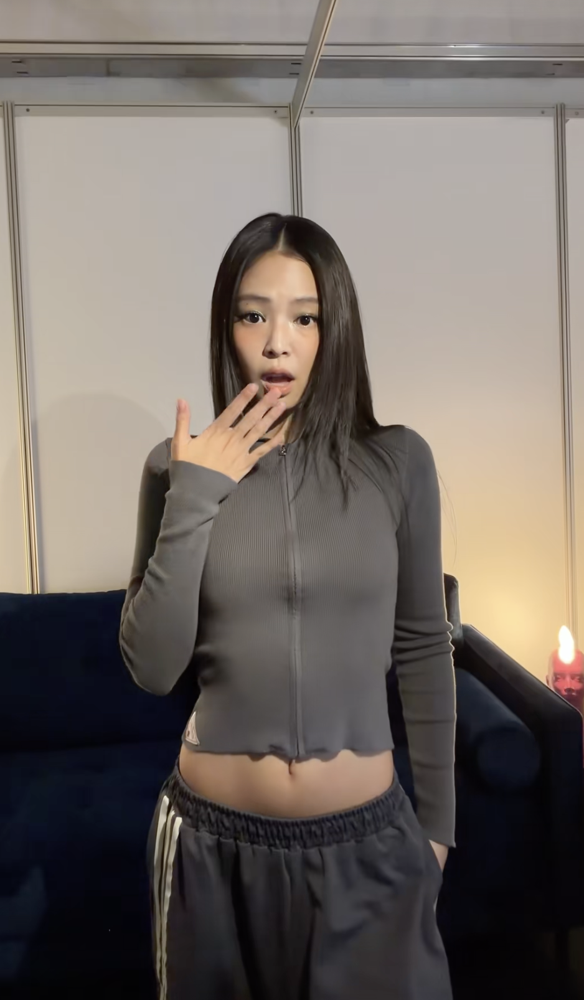
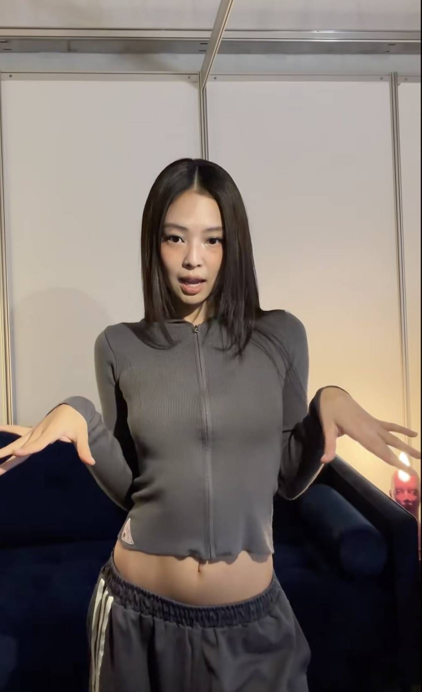

Blog Content Guideline
제니 유럽 사복,
젠민수 아이템 아카이브
코펜하겐에서 로스킬레·오프너 페스티벌까지. 브랜드 규모가 아니라 취향으로 룩을 완성하는 제니의 유럽 일정을, 실제 동선 그대로 정리하는 블로그 가이드입니다.
코펜하겐공연 준비로스킬레오프너
Blog Content Guideline
코펜하겐에서 로스킬레·오프너 페스티벌까지. 브랜드 규모가 아니라 취향으로 룩을 완성하는 제니의 유럽 일정을, 실제 동선 그대로 정리하는 블로그 가이드입니다.
Overview
01 Title
제품명을 나열하기보다, 코펜하겐·로스킬레·오프너로 이어지는 유럽 일정을 전면에 두고 구체적인 제품 정보는 본문 문맥에서 자연스럽게 노출되도록 구성해 주세요.
02 Direction
항목을 눌러 펼쳐보세요. 개별 제품 설명보다 이 톤이 먼저입니다.
03 Body
‘전문 보기’로 권장 문장을 확인·복사하고, 룩 카드의 ‘가이드 더보기’로 상세 톤을 참고하세요.
대형 음악 축제(로스킬레·오프너) 헤드라이너 출격 소식과, 무대 밖 자연스러운 사복 패션을 함께 조명해 주세요.
제니는 최근 코펜하겐을 시작으로 덴마크 로스킬레 페스티벌과 폴란드 오프너 페스티벌까지 유럽 일정을 이어갔다. 유럽을 대표하는 대형 음악 축제의 헤드라이너로 무대에 오른 모습뿐 아니라, 도시를 이동하고 공연을 준비하는 과정에서 보여준 자연스러운 사복 스타일도 함께 눈길을 끌었다. 코펜하겐에서는 구조적인 그레이 톱과 블랙 액세서리를 매치했고, 덴마크 공연을 준비하는 과정에서는 선명한 블루 컬러의 슈즈로 포인트를 더했다. 이후 페스티벌 일정에서는 짧고 가벼운 후드집업을 편안하게 활용했다.
제니의 사복이 흥미로운 이유는 럭셔리 브랜드와 비교적 접근 가능한 브랜드 사이에 특별한 경계를 두지 않는다는 점이다. 가격이나 브랜드의 규모보다 자신의 취향에 맞는 실루엣과 컬러를 선택하고, 그것을 자연스럽게 섞어 입는 모습에서 제니의 스타일이 조금 더 현실적이고 친근하게 다가온다.
구조적인 그레이 톱에 블랙 선글라스와 볼링백을 매치한 절제된 룩으로 자연스럽게 연결해 주세요.
제니의 이번 유럽 일정에서 가장 먼저 눈에 들어온 것은 코펜하겐에서 보여준 사복 스타일이었다. 구조적인 그레이 톱에 블랙 선글라스와 볼링백을 매치해, 컬러는 절제하면서도 각 아이템의 실루엣이 분명하게 드러나는 룩을 완성했다.


테일러드 베스트 디자인에 깊고 둥근 네크라인이 특징인 구조적인 슬리브리스 톱. 데님이나 슬랙스 같은 기본 하의에 매치해 볼 만한 제품으로, 누구나 소화하기 쉽다고 단정하기보다 스타일 참고용으로 기술해 주세요.

스포티하면서도 클래식한 직사각형 선글라스. 앰버서더 합류 후 일상과 공연에서 반복 착용 중인 점을 강조해 주시고, 사이즈 영향을 덜 받아 가장 시도하기 좋은 현실적인 젠민수 아이템으로 소개해 주세요.

높은 가격대의 럭셔리 가방인 만큼 번외 위시리스트로 분류해 주세요. “기마구아스와 레이벤까지는 현실적으로 찾아볼 수 있지만, 더 로우 아스트라 백은 일단 위시리스트에 조용히 넣어두는 것으로”처럼 위트 있게 마무리하면 좋습니다.


외부 끈이 없는 간결한 구조의 플랫 슈즈 형태 스니커즈. 리허설 및 공연 준비 과정에서 신은 편안한 슈즈로, 선명한 블루 컬러가 착장의 확실한 포인트가 된다는 점을 언급해 주세요. 20만 원 이하로, 협업 제품 중 상대적 접근성이 좋은 가격대임을 함께 확인 부탁드립니다.


100% 코튼 아일렛 조직으로 가볍고 통기성이 좋은 크롭 후디. 티셔츠나 가벼운 카디건처럼 활용하는 형태이며, 제니 인스타 스토리에 등장했습니다. 앞선 뉴욕 리허설 당시에도 이니어 제품을 착용했던 흐름을, 동일 제품이 아닌 브랜드 선호 흐름으로 매끄럽게 연결해 주세요.


얇고 몸에 가깝게 떨어지는 니트 소재의 크롭 후디. 제니 공식 틱톡 영상과 이전 공항 패션에서도 포착된 아이템으로, 일상에서 여러 차례 반복적으로 활용하는 데일리 후디로 소개해 주세요.
04 Checklist
05 Keywords
한 문단에 몰아넣지 말고, 각 일정과 제품 설명 맥락에 맞춰 고르게 배치해 주세요.
06 Closing
그레이·차콜·블랙의 차분한 톤 위에, 블랙 액세서리와 선명한 블루 슈즈를 포인트로. 그대로 복제하지 않더라도, 슬림한 상의와 컬러 조합 방식은 일상에서 충분히 참고할 수 있습니다.